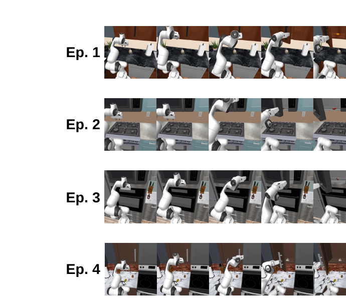
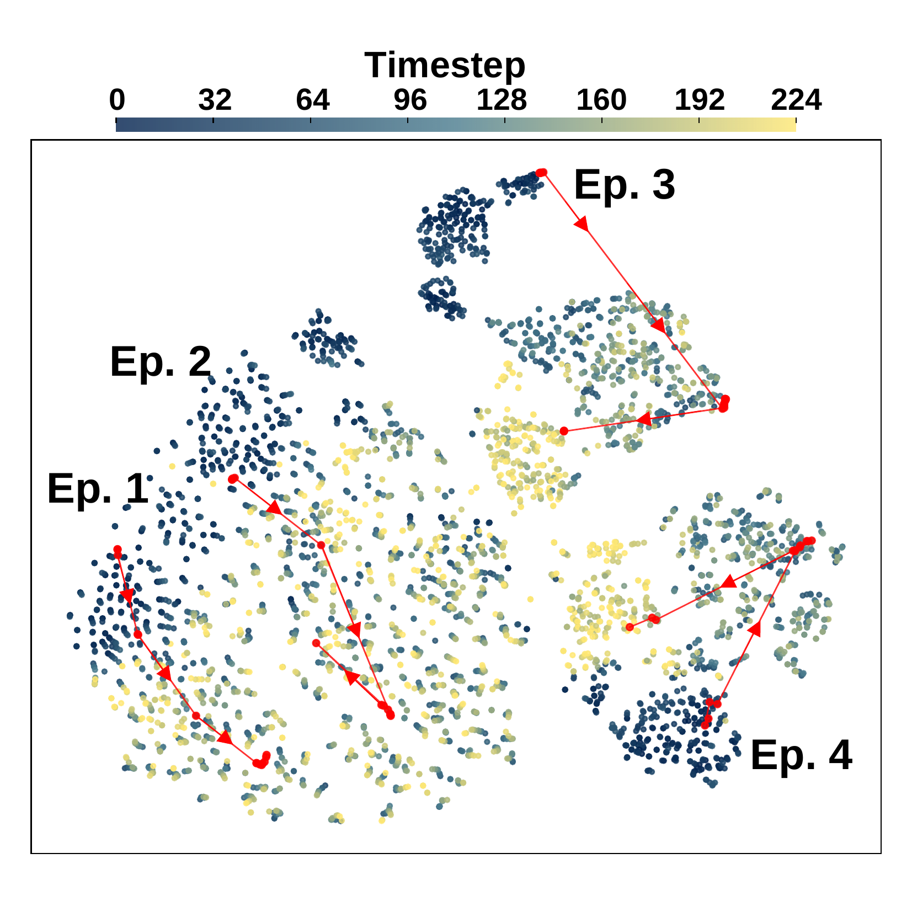
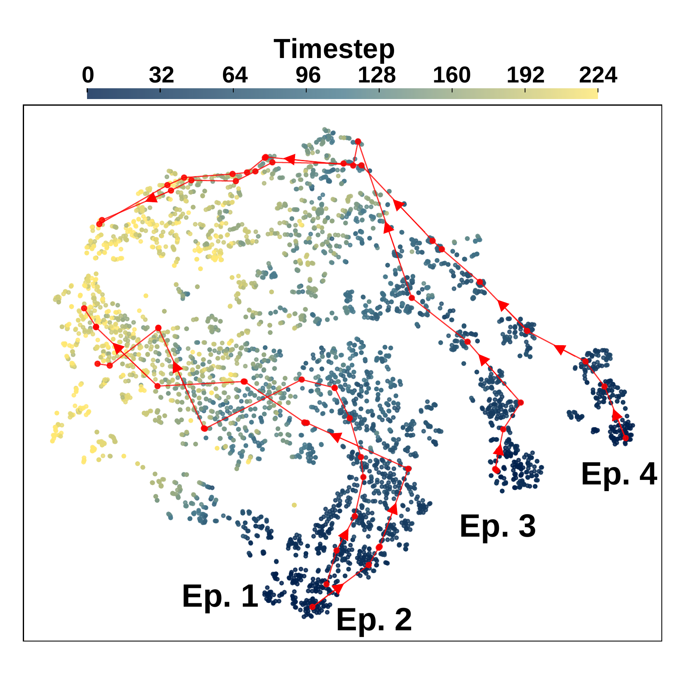
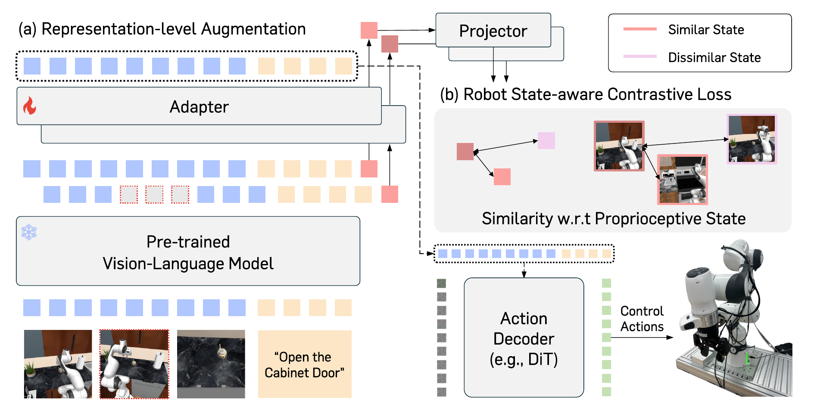
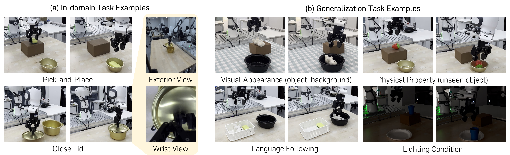
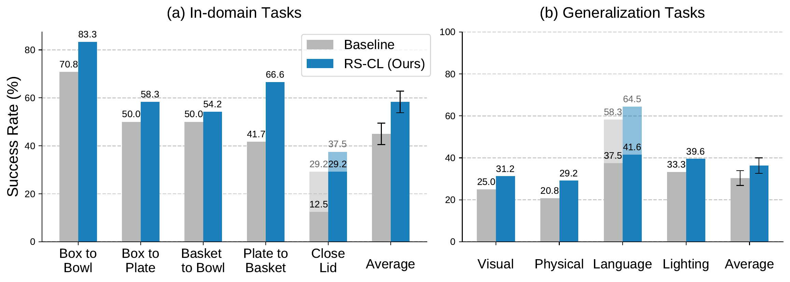

Vision-Language-Action (VLA) models have shown strong capabilities in robot manipulation by leveraging rich representations from pre-trained Vision-Language Models (VLMs). However, their representations arguably remain suboptimal, lacking sensitivity to robotic signals such as control actions and proprioceptive states. To address the issue, we introduce Robot State-aware Contrastive Loss (RS-CL), a simple and effective representation regularization for VLA models, designed to bridge the gap between VLM representations and robotic signals. In particular, RS-CL aligns the representations more closely with the robot's proprioceptive states by using relative distances between the states as soft supervision. Complementing the original action prediction objective, RS-CL enhances control-relevant representation learning, while being lightweight and fully compatible with standard VLA training pipelines. Our empirical results demonstrate that RS-CL substantially improves the performance of state-of-the-art VLA models, boosting success rates from 45.0% to 58.3% on challenging real-robot manipulation tasks.
We visualize VLM embeddings of robot episodes performing the same task ("Open the microwave / cabinet door") across different scenes. Pre-trained VLM representations are dominated by visual appearance (e.g., scene layout, surrounding objects), clustering by visual cues rather than control-relevant factors. RS-CL instead guides embeddings to align with the robot's proprioceptive states, capturing common robotic signals (e.g., current pose, next action) and aligning all episodes by task progress.

Identical task trajectories

Pre-trained VLM representations

RS-CL aligned representations
Robot State-aware Contrastive Loss (RS-CL) is an objective that regularizes the VLM representation space using supervision from the robot's proprioceptive states. It is built from three key components:
By operating at the representation level and training end-to-end in a single stage, RS-CL remains fully compatible with existing VLA training pipelines.

RS-CL successfully injects control-relevant structure into the VLM representation while preserving the initial semantics.
| Representation | Scene Acc. (%) | Task-progress Acc. (%) |
|---|---|---|
| Pre-trained VLM embeddings | 99.6 | 1.2 |
| Embeddings trained with RS-CL | 93.6 | 22.9 |
| Ground-truth proprioceptive states | 53.1 | 25.6 |
KNN classification accuracy (%) on the representation space.
RS-CL raises manipulation precision on real robot tasks — improving average success rates from 45.0% to 58.3% — without harming generalization (e.g., visual appearance, physical properties, language following, lighting conditions).


@inproceedings{kim2026contrastive,
author = {Kim, Taeyoung and Lee, Jimin and Koo, Myungkyu and Kim, Dongyoung and Lee, Kyungmin and Kim, Changyeon and Seo, Younggyo and Shin, Jinwoo},
title = {Contrastive Representation Regularization for Vision-Language-Action Models},
booktitle = {International Conference on Machine Learning (ICML)},
year = {2026},
}